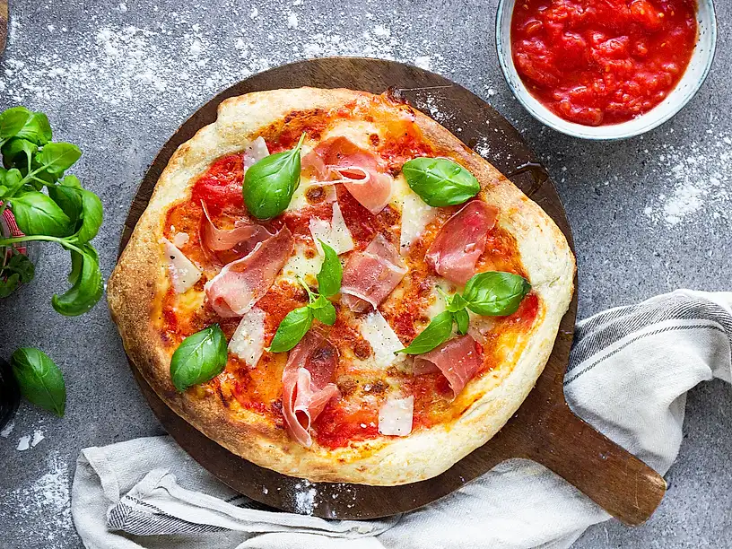

Pizza

Beskrivning
En napolitansk pizza med tunn botten och fluffiga fina kanter, toppas med prosciutto, mozzarella, parmesan och basilika. Använd hela konserverade tomater när du vill göra äkta napolitansk pizza och ha högsta möjliga temperatur på ugnen.
Ingridienser
Pizzadeg
- 1 tsk jäst
- 5 dl vatten
- 700 g vetemjöl special
- 2 tsk salt
- 2 msk olivolja
Topping
- 1 burk hela konserverade tomater
- olivolja
- 300 g mozzarellaost
- ca 150 g prosciutto
- färsk basilika
Steg
- Smula jästen i bunken till en köksmaskin. Tillsätt vatten och lös upp jästen. Tillsätt sedan mjöl och blanda på låg hastighet ca 5 minuter. Tillsätt salt och olivolja och blanda ytterligare 5 minuter på medelhastighet.
- Dela degen i fyra delar och rulla till jämna släta bollar. Gnid in degen med olivolja och låt jäsa 12–24 timmar i kyl, alternativt 4 timmar i rumstemperatur.
- Sätt ugnen på 250 grader eller högsta möjliga temperatur och ställ in en pizzasten så den blir varm.
- Dra ut degarna med händerna så de blir tunna i mitten med tjockare kanter.
- Krossa tomaterna med en gaffel och bred ett lager på pizzorna. Ringla över lite olivolja och smula över mozzarellan.
- Dra försiktigt över pizzan på den varma plåten och grädda i ugnen i ca 10-15 minuter eller tills pizzan har fått fin färg.
- Avsluta med några basilikablad och servera omedelbart.